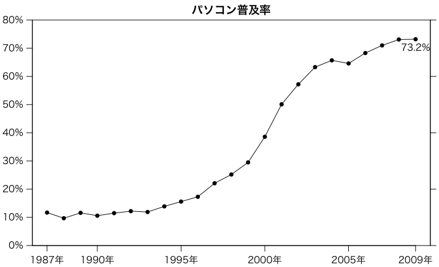

内閣府の消費動向調査でもいろいろなものの世帯普及率が調査されている。平成21年（2009年）の「普及率（3月調査）」をグラフ化してみる。
# par(family="HiraKakuPro-W3") # Mac
par(las=1) # 縦軸の文字を横向きにしない
par(mgp=c(2,0.8,0)) # 軸マージン（デフォルト: c(3,1,0)）
パソコン普及率 = c(11.7, 9.7, 11.6, 10.6, 11.5, 12.2, 11.9, 13.9,
15.6, 17.3, 22.1, 25.2, 29.5, 38.6, 50.1, 57.2, 63.3, 65.7, 64.6,
68.3, 71.0, 73.1, 73.2)
年 = 1987:2009
plot(年, パソコン普及率, type="o", pch=16, ylim=c(0,80),
xlab="", ylab="", xaxt="n", yaxt="n", yaxs="i")
t = seq(0,80,10)
axis(2, t, paste(t,"%",sep=""))
axis(4, labels=FALSE)
t = c(1987, seq(1900,2005,5), 2009)
axis(1, t, paste(t,"年",sep=""))
title("パソコン普及率", family="HiraKakuPro-W6", line=0.5)
t = パソコン普及率[年==2009]
text(2009, t, paste(t,"%",sep=""), pos=1)

Last modified: 2009-05-10 13:26:43